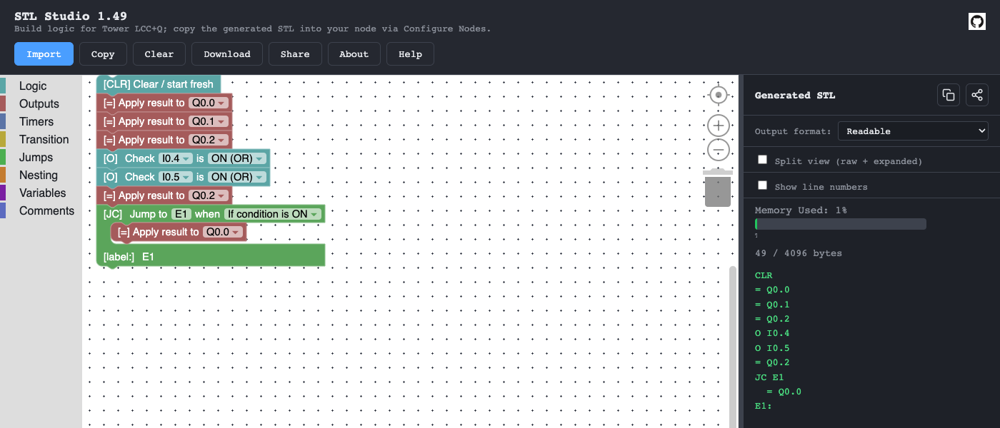

STL Studio: Tower LCC+Q Logic with Blocks
A free web editor for the logic inside an RR-CirKits Tower LCC+Q. You snap blocks together instead of typing a terse controller language, and it writes the exact text the node expects.
Not everything behind the scenes ends up on the layout. STL Studio is a free web tool I built for the wider LCC and model-railroad community. It makes the logic inside an RR-CirKits Tower LCC+Q node easier to write. HART doesn't use Tower nodes today, but this is the kind of tinkering that goes on between sessions.
Drag the logic together, read it back in plain English, then paste it into the node.
01A node that can think
LCC, Layout Command Control, is the NMRA's standard for layout control networks. Devices on the bus talk in events: short messages like "block 4 occupied" or "show Approach." The Tower LCC+Q from RR-CirKits is an LCC node with 16 input/output lines. It also has a small built-in logic engine, like the PLCs (programmable logic controllers) that run real factory equipment.
That logic engine can listen for events, combine them, and send new ones. It can drive a signal, a crossing flasher, or an interlocking rule ("don't clear this signal if the switch is against it") right in the node, with no computer in the loop.
02STL in one minute
The node is programmed in STL, short for Statement List: a small part of the Siemens S7 language used on industrial controllers. It only deals in on/off values. There's no math and no counting, but that's enough for signals and interlocking.
Everything is a bit with a short name:
- I: inputs, set by incoming LCC events (I0.0 to I15.7)
- Q: outputs, which send LCC events when they change
- M: memory, scratch bits only the node can see
- Y and Z: track-circuit codes received from and sent to neighboring signals
- T: timers, T0 to T63
Each line is one step. The node carries a single true/false "result" from line to line. Here's a stop signal, from the STL Studio help:
O I0.0 // block occupied ON I0.1 // OR switch lever not in position = Q1.0 // show Stop
Read it as: "If the block is occupied, or the lever isn't set, turn on Stop."
03Why typing it is hard
STL looks simple, but it trips people up in a few ways:
Common traps
- Hidden state. Whether a line starts a fresh condition or adds to the last one depends on what came before. An
=, a jump or a timer start ends one condition and starts the next, and nothing on screen shows it. - Tight space. The node holds 16 logic groups of 256 characters each.
- Reserved names. T0 to T63 belong to the timers. Even mentioning one in a comment ("set T1 closed") can confuse the node.
- Strict formatting. Labels are one to four characters plus a colon. Inputs can't be written to, and outputs can't be set from the network.
One wrong letter gives you a signal that's wrong in a way you won't see until a train is sitting at it.
04How STL Studio works
STL Studio runs in a web browser, with nothing to install. It uses Blockly, the same snap-together blocks as Scratch.

- Blocks. Drag blocks from the categories: Logic, Outputs, Timers, Transition, Jumps, Nesting, Variables and Comments. Each block reads like a sentence, such as "Check I0.4 is ON." The stack runs top to bottom.
- Generate. The STL panel updates as you build. Readable format adds spaces; Compact drops them to save room. Split view puts a plain-English line under each instruction, and a bar shows how much of the node's memory the logic uses.
- Copy. Copy to clipboard. In JMRI, open Configure Nodes for your node, paste into its logic group, write it, and reboot the node.
- Import. Paste existing STL to turn it back into blocks, or import a node's config backup so the menus show your own names ("East Approach") instead of bare addresses.
Each block maps to one STL instruction:
- AND →
A - OR NOT →
ON - Apply result →
= - Set / reset →
S/R - On-delay timer →
L+SD - Jump if true →
JC
It can also download the logic, inputs, outputs and track circuits as CSV files for JMRI.
05Why it's here
STL Studio isn't part of HART's control system, and there are no Tower LCC+Q nodes on the layout today. On HART, small radio nodes under the benchwork light the signal lamps, JMRI decides what each signal shows, and the dispatcher works the CATS or USS CTC panel (see How the signals work).
I built STL Studio for modelers whose signals and interlockings run on Tower nodes, and shared it the way HART shares its other tools. It's free and open source. If your club uses Towers, try it and send feedback through GitHub.
NotesReferences
- STL Studio (live app). lnevo.github.io/stl-studio
- STL Studio source (GitHub). github.com/lnevo/stl-studio
- RR-CirKits. Tower LCC+Q manual. rr-cirkits.com
- JMRI OpenLCB STL Editor help. jmri.org
More: How the signals work · Electronics & the bridge · Behind the Scenes